| 출품 분과 | 교육용 SW·AI | 적용 교과 : 국어 |
| 연구 대상 | 초등학교 (5~6학년군 중심) |
| 개발 형태 | 반응형 웹 애플리케이션 · 프로토타입 v0.7 |
| 제출 구분 | 소프트웨어 + 연구보고서 (블라인드) |
「책갈피」 — 손글씨 독후감을 읽고 키워주는 AI 독서 첨삭 플랫폼
| 출품 분야 | 교육용 SW·AI | 운영 환경 | 크롬 등 웹 브라우저(PC·태블릿·스마트폰) |
| 적용 교과 | 국어(독서·쓰기) | 대상 학년 | 초등 5~6학년(전 학년 확장 가능) |
| 개발 환경 | HTML5·CSS3·JavaScript(무빌드 단일 파일) · 실서비스 배포(Netlify) | 데이터 | 로컬 저장 → 서버(Firebase) 연동 설계 |
| AI 엔진 | 생성형 LLM(첨삭·OCR), 규칙 기반 폴백 | 최소 사양 | 인터넷 연결, 카메라(사진 입력 시) |
프로토타입을 구현하고 10개 기능 영역을 통합 검증하였다. 시스템은 고쳐쓰기 향상도·성취수준 분포를 자동 산출하여 효과 검증의 근거 자료를 제공한다. 교실 적용을 위한 검증 설계(성취수준 루브릭·동기 설문·교사 업무경감 설문)를 수립하였다.
「책갈피」는 손글씨 OCR·AI 첨삭·교사 확정·동기 부여를 하나의 흐름으로 엮어 교사 평가 부담을 줄이면서 학생의 읽기·쓰기 성장을 가시화한다. 무설치 웹과 키 설정이 필요 없는 설계로 현장 도입 장벽이 낮고, 성취수준 근거 평가로 교육적 타당성을 확보하여 전국 어느 학급에서나 일반화가 용이하다.
요컨대 독후감 교육은 교사의 첨삭 역량과 시간에 크게 의존하지만, 현실의 학급 규모와 업무량은 모든 학생에게 충분한 개별 피드백을 보장하기 어렵다. 학생은 자신의 글이 어디가 좋고 어디를 어떻게 고쳐야 하는지 구체적으로 알기 어려워, 독후감이 형식적인 줄거리 요약에 머무르기 쉽다. 본 연구는 이 구조적 간극을 기술로 메우되, 교사의 전문적 판단을 대체하지 않고 보조하는 방향을 택한다.
1) 한국교육개발원·언론 보도 등에서 초등 문해력 저하와 글쓰기 피드백 공백이 지속적으로 지적되고 있다(참고문헌 참조).
본 연구의 목적은 초등 국어과 독서·쓰기 활동에 활용할 수 있는 AI 기반 독서 첨삭 플랫폼 「책갈피」를 개발하는 것이다. 구체적 목표는 다음과 같다.
| 성취수준 루브릭 | 성취기준 도달 정도를 단계(A·B·C)로 기술한 평가 척도. 본 연구는 독후감을 5개 축(내용 이해·감상 표현·삶과 연결·구성·맞춤법)으로 진단한다. |
| OCR | 광학 문자 인식(Optical Character Recognition). 손글씨·인쇄 글자 이미지를 디지털 텍스트로 변환하는 기술. |
| 생성형 LLM | 대규모 언어 모델(Large Language Model). 자연어를 이해·생성하여 첨삭·요약·진단 등에 활용한다. |
| 과정 중심 평가 | 결과물뿐 아니라 학습의 과정(고쳐쓰기·성장)을 지속적으로 관찰·피드백하는 평가 방식. |
| 서버측 AI 호출 | 학생이 모델을 직접 호출하지 않고, 서비스에 내장된 운영자 API 키로 서버에서 AI를 호출하는 방식. 연령 제한 약관 문제를 피하고, 교사·학생의 키 설정 부담을 없앤다. |
본 연구는 초등 5~6학년 국어과 독서·쓰기 활동을 범위로 하며, 프로토타입 개발과 교육적 활용 설계에 중점을 둔다. 대규모 효과성 검증은 후속 적용 연구의 과제로 둔다.
| 단계 | 기간 | 주요 내용 |
|---|---|---|
| 분석·설계 | 1~2개월 | 대회·선행 사례 분석, 교육과정 성취기준 매핑, 기능·화면 설계 |
| 개발(MVP) | 2~3개월 | OCR·AI 첨삭·교사 콘솔·랭킹 구현 및 통합 검증 |
| 고도화 | 1개월 | UI/UX·접근성 감리, 사물함·캐러셀·명예의 전당 보강 |
| 적용·검증 | 8주(예정) | 학급 적용, 사전·사후·교사 설문, 산출 데이터 수집 |
2022 개정 국어과는 '한 학기 한 권 읽기'를 통한 깊이 있는 독서와, 체험·감상을 글로 표현하는 쓰기 활동을 강조한다. 특히 쓰기 영역의 고쳐쓰기와 독자와의 공유가 성취기준으로 명시되어, 독후감을 쓰고 다듬고 나누는 일련의 과정이 교육과정의 핵심 흐름과 일치한다.
나아가 교육과정은 평가관을 결과 중심에서 과정 중심으로 전환할 것을 요구한다. 한 편의 완성된 글을 채점하는 데 그치지 않고, 학생이 자신의 글을 점검·조정하며 성장하는 과정 자체를 관찰하고 피드백하는 것이 핵심이다. 그러나 다인수 학급에서 이러한 개별·즉시 피드백을 사람의 손만으로 제공하기는 현실적으로 어렵다. 바로 이 지점에 AI 보조의 교육적 필요성이 있다.
과정 중심 평가는 한 번의 결과물이 아니라 성장의 궤적을 평가한다. 이를 위해서는 (1) 성취기준에 근거한 명료한 루브릭, (2) 즉각적·구체적 피드백, (3) 고쳐쓰기 전후의 변화 기록이 필요하다. 「책갈피」의 5축 루브릭·즉시 첨삭·고쳐쓰기 향상도 측정은 이 세 요건을 직접 구현한 것이다.
생성형 AI 활용 교육 연구는 2023년 이후 빠르게 증가하였으며, 초등에서는 5~6학년을 대상으로 한 사례가 가장 많다.2) 다만 다수 연구가 학생의 직접 활용에 치우쳐 있어, 교사가 평가·피드백 설계에 AI를 활용하는 모델은 상대적으로 드물다. 본 연구는 AI 초안 → 교사 확정 구조로 이 공백을 겨냥한다. 또한 생성형 AI의 연령 제한 약관을 고려해 학생이 모델을 직접 호출하지 않도록 설계하여 규정 리스크를 회피한다.
2) 국내 초·중등 생성형 AI 교육 연구 동향 분석(2024) 등.
| 사례 | 핵심 | 결핍(책갈피의 기회) |
|---|---|---|
| 맞춤법 학습 코스웨어 | AI 맞춤법 검사·받아쓰기·게이미피케이션·OCR·LMS | 철자 교정 중심 → 내용·사고 첨삭 부재 |
| 독서교육 지원 시스템 | 권장도서·독후활동 인증·진급·시상·토론 | 인증·권장에 그침 → AI 피드백·질적 성장 추적 부재 |
| 일반 생성형 챗봇 | 자유로운 대화형 첨삭 | 교육과정 근거 없음 → 성취수준 진단 불가, 연령 제한 |
구체적으로, 맞춤법 학습 코스웨어는 AI 검사·받아쓰기·문제은행·게이미피케이션을 정교하게 구현했으나 평가의 초점이 철자·표기에 있어, 학생이 읽고 느낀 내용을 어떻게 더 깊게 표현할지에 대한 피드백은 제공하지 못한다. 독서교육 지원 시스템은 권장도서·독후활동 인증·시상으로 읽기 동기를 자극하지만, 제출된 글의 질적 성장(어휘·구성·사고)을 진단하거나 추적하지 못한다. 일반 생성형 챗봇은 유연한 첨삭이 가능하나, 교육과정 성취기준이라는 공통 기준이 없어 평가의 일관성·설명 가능성이 부족하며, 미성년자의 직접 이용에 약관상 제약이 있다.
이러한 공백은 「책갈피」가 채우려는 지점을 명확히 보여 준다. 즉, 읽은 내용을 자신의 말로 풀어내고 다듬는 과정을 교육과정 성취수준에 비추어, 교사의 최종 판단 아래에서 길러내는 도구가 필요하다.
디지털 문해력은 단순한 기기 조작을 넘어, 디지털 환경에서 정보를 비판적으로 읽고 책임 있게 표현하는 역량이다. 「책갈피」는 손글씨를 디지털로 옮기고, AI 피드백을 비판적으로 수용·반영해 고쳐 쓰는 경험을 통해 읽기·쓰기 문해력과 디지털 문해력을 동시에 기른다.
또한 보편적 학습설계(UDL)는 학습자의 다양성을 전제로 표상·표현·참여의 다중 수단을 제공할 것을 강조한다. 본 시스템의 음성 입력·읽어주기·쉬운 말 모드·원고지 모드는 이 원리를 직접 구현하여, 다문화·느린 학습자·특수 학생의 접근성을 높인다.
독서는 글의 정보를 그대로 받아들이는 것이 아니라, 독자가 자신의 배경지식과 경험을 동원해 의미를 능동적으로 구성하는 과정이다. 독후감은 이 의미 구성의 결과를 언어로 외화(外化)하는 활동으로, 읽기와 쓰기가 만나는 통합적 사고의 장(場)이다.
한편 쓰기 연구는 글쓰기를 ‘계획–작성–검토·수정’이 순환하는 회귀적 과정으로 본다. 좋은 글은 한 번에 완성되지 않으며, 자신의 글을 다시 읽고 고치는 고쳐쓰기를 통해 다듬어진다. 「책갈피」가 AI 첨삭과 고쳐쓰기 향상도를 핵심에 둔 것은 이러한 과정 중심 쓰기 이론에 근거한다. 학생은 피드백을 받아 다시 쓰는 경험 속에서 ‘쓰기란 고쳐 가는 것’임을 체득한다.
| 적용 교과 | 국어(독서·쓰기) | 대상 학년 | 초등 5~6학년 |
| 개발 환경 | HTML5·CSS3·JavaScript(단일 파일·무빌드) | 운영 환경 | 크롬 등 웹 브라우저 |
| OCR | Gemini Vision(운영자 키·서버 프록시) — 실배포·작동 / Tesseract+전처리 폴백 | AI 첨삭 | 생성형 LLM(Gemini, 서버 프록시) — 실배포·작동 / 규칙 기반 폴백 |
| 맞춤법 | 다음(Daum) 맞춤법 검사기(서버 함수) — 실배포·작동 / 내장 사전 폴백 | 호스팅 | Netlify 실서비스(chaekgalpi.netlify.app) |
| 데이터 관리 | 브라우저 localStorage(프로토타입) → 서버(Firebase) 연동 설계 | 최소 사양 | 인터넷 연결, 카메라(사진 입력 시) |
※ OCR(Gemini Vision)·맞춤법(다음 검사기)·AI 첨삭(생성형 LLM)은 운영자 키를 보관하는 서버 프록시(Netlify Function)로 실제 배포되어 작동하며, 학생은 모델을 직접 호출하지 않는다(연령 약관 회피). 키·서버가 없는 환경에서는 규칙 기반·브라우저 OCR(Tesseract)로 자동 폴백하여 무중단으로 동작한다.
AI 첨삭의 5개 축은 2022 개정 국어과 5~6학년군 성취기준에 직접 대응한다. 성취기준이 곧 채점 기준이 되므로, 일반 챗봇 첨삭과 본질적으로 구별된다.
| 첨삭 축 | 성취기준 | 내용 | 피드백 방향(B→A) |
|---|---|---|---|
| 내용 이해 | [6국05-03] | 인물·사건·배경 파악 | 요소를 적절히 정리·연결 |
| 감상 표현 | [6국03-03] | 체험에 대한 감상 표현 | 감상을 풍부·구체적으로 |
| 삶과 연결 | [6국05-06] | 작품을 삶과 연관·성찰 | 경험과 적극 연결·성찰 |
| 구성·근거 | [6국03-05] | 통일성 있게 고쳐 쓰기 | 근거·문장 연결 강화 |
| 맞춤법 | [6국04-06] | 표기의 정확성 | 표기·띄어쓰기 정확화 |
공유·동기 관련 [6국03-06](독자와 공유)·[6국02-05](긍정적 읽기 동기)는 나눔터·랭킹 기능에 연계된다. (전체 매핑은 [붙임3])
또한 본 시스템의 활동은 2022 개정 국어과가 제시하는 교과 역량 함양과 직결된다.
| 국어과 역량 | 책갈피 연계 활동 |
|---|---|
| 비판적·창의적 사고 | AI 발전 제안에 따른 사고 확장과 고쳐쓰기 |
| 디지털·미디어 소양 | 손글씨 OCR·디지털 독후 산출물 제작·공유 |
| 의사소통 | 나눔터·독서 토론·또래 응원 |
| 자기 성찰·계발 | 삶과 연결 첨삭·성장 그래프·독서 칭호 |
| 공동체·대인 관계 | 학급 랭킹·명예의 전당·미션 협력 |
핵심 데이터는 계정(학생·교사)·독후감·평가·학급 활동으로 구성되며, 학교·학년·반을 키로 하는 학급 단위로 묶인다. 학생이 같은 학교·학년·반으로 가입하면 자동으로 해당 학급에 편성된다.
| 엔터티 | 주요 속성 |
|---|---|
| 계정 | 역할, 학교·학년·반, 이름, 포인트, 레벨·칭호, 아바타 착장, 뱃지, 알림 |
| 독후감 | 도서, 본문, 입력 방식, 5축 점수·성취수준, 사진 원본, 고쳐쓰기 향상도, 교사 확정·코멘트 |
| 학급 활동 | 미션(도서·기간), 챌린지, 시즌(학교 대항), 독서 토론 주제 |
화면은 역할 분기(학생 탭 / 교사 사이드바 콘솔)로 나뉘며, 독후감은 입력 → AI 첨삭 → 교사 검토·확정 → 공유·랭킹의 단방향 흐름을 따른다.
실제 독후감이 어떻게 진단·피드백되는지 한 예로 보인다. 성취수준은 5축 평균으로 산출되며, 출력은 칭찬·개선·발전 3블록으로 구조화된다.
| 축 | 점수 | 진단 근거 |
|---|---|---|
| 내용 이해 | 5 | 인물의 변화(쓸모없음→거름→꽃)를 정확히 파악 |
| 감상 표현 | 4 | 감상이 분명하나 장면 묘사가 더 풍부할 수 있음 |
| 삶과 연결 | 5 | 자신의 경험과 적극 연결·성찰 |
| 구성·근거 | 4 | 흐름은 자연스러우나 근거 문장을 보탤 여지 |
| 맞춤법 | 4 | 표기 정확, 일부 띄어쓰기 점검 필요 |
현장 도구는 무엇보다 안정적으로 끊김 없이 동작해야 한다. 「책갈피」는 ① AI 키가 없거나 네트워크가 불안정해도 규칙 기반 첨삭·브라우저 OCR로 자동 폴백하여 수업이 멈추지 않게 하고, ② 단일 HTML·무빌드 구조로 배포·갱신을 단순화했으며, ③ 이미지·데이터를 압축·경량화하여 저사양 단말과 학교 네트워크에서도 무리 없이 동작하도록 설계하였다. 또한 입력이 짧거나 비어 있는 경우 등 예외 상황에 대한 안내 메시지를 제공해 사용성을 높였고, 모든 화면은 데스크톱과 태블릿·스마트폰에 모두 대응하는 반응형으로 구성하였다.
본 연구는 ‘설계만 한 기획’이 아니라 실제 배포되어 작동하는 소프트웨어를 산출하였다. 동시에, 교육 행정 시스템의 폐쇄성과 단일 서버 미보유라는 현실적 제약을 투명하게 구분하여 밝힌다. 핵심 교육 기능은 실모듈로 동작하며, 미구현 항목은 대부분 외부 폐쇄망·서버 인프라에 기인하므로 명확한 일반화 로드맵으로 이어진다.
| 구분 | 항목 | 비고 |
|---|---|---|
| ✅ 실구현·배포 | 손글씨 OCR(Gemini Vision) · 맞춤법(다음 검사기 서버 프록시) · AI 5축 첨삭 · 진위 점검 — 모두 운영자 키 서버 프록시로 실작동 | 실서비스 호스팅(Netlify)에서 실제 학생 손글씨 판독·첨삭 검증 완료 |
| ✅ 실구현·배포 | 전국 초등 6,331개교 NEIS 실데이터 로그인·검색 / 4계층 역할 / 입력 3종(키보드·원고지·OCR) / 5축 루브릭·교사 루브릭 가중치 / 고쳐쓰기 Diff·향상도 / 교사 검토·확정·코멘트 / NEIS 생기부 자동요약 / 표창장·가정통신문·포트폴리오·CSV 산출 / 음성 입력(STT)·읽어주기(TTS)·쉬운 말 모드 / OCR 돋보기 / 성장 카드 PNG 저장 / 나만의 단어장 | 브라우저에서 즉시 작동 (음성 입력은 Chrome 기반 브라우저 필요 — Web Speech API) |
| ✅ 실구현·배포 | 카카오/네이버 책 검색 API 연동(Netlify 서버 프록시) — 책 표지 자동 불러오기·독후감 작성 시 책 검색·표지 미리보기 / 독서 게임 8종(골든벨·밸런스게임·빙고·책 퀴즈·퀴즈 대결·어휘게임·인물맞히기·마라톤) | 실제 API 키 연동 완료(Netlify 환경변수 등록) |
| ⚠️ 시연용 데이터 | 도서관 대출(DLS) 현황 · 전국 랭킹 · 학교 대항전 | 화면·집계 로직은 작동하나 데이터는 시연용 시드. 독서로DLS는 교육청 폐쇄망이라 공개 API 부재 → CSV 업로드·정보나루 OpenAPI로 확장 가능 |
| ⚠️ 구조적 제약 | 데이터 저장(localStorage·기기 1대 한정) · 실시간 퀴즈 대결(봇 시뮬레이션) | 학급 공유·영속·실시간 멀티는 서버 DB 전환 시 해소(설계 완료) |
| ❌ 향후 과제 | Firebase 서버 전환(설계 완료) · 정보나루 OpenAPI 연동 · DLS CSV 업로드 · 실제 학급 적용 검증 데이터 수집 | Ⅴ장 검증 수치는 현재 예시(가안)이며, 본 적용 후 실측치로 대체 예정 |
「책갈피」는 학생 · 담임교사 · 교무관리자 · 사서교사의 4계층 권한으로 구성되어, 단일 학급을 넘어 학교 전체의 독서 교육 시스템으로 작동한다. 성장은 6단계(씨앗→새싹→묘목→나무→꽃→열매)와 독서 칭호로 시각화된다.
| 대상 | 상위 메뉴 | 주요 하위 기능 |
|---|---|---|
| 학생 | 내 서재 · 독후감 쓰기 · 단계 학습 · 독서게임 · 나눔터 · 상점 · 랭킹 | 성장·칭호·책 발견(북 트레일러) / OCR·원고지·AI 첨삭·고쳐쓰기 Diff / 레벨 패스·위저드 / 우수작·토론 / 아바타 사물함 / 포디움·명예의 전당 |
| 담임교사 | 학급 대시보드 · 독후감 검토 · 학생 관리 · 미션 · 랭킹 | 통계·5축 분석·표창장 / 검토·확정·원본 열람·진위 점검·Diff / 비번 초기화·포인트 지급 / 미션 개설 |
| 교무관리자 | 학교 종합 통계 · NEIS 생기부 자동요약 | 전교 KPI·학년별 5축 분포·학급 비교 / 생기부 ‘독서활동상황’ 요약문 자동 생성·복사 |
| 사서교사 | 도서관 대시보드 · 이달의 책·행사 | 전교 독서현황·인기 독후도서 / DLS 대출 Top(→학생 ‘책 발견’ 자동 반영) / 이달의 책·학교 챌린지 개설 |
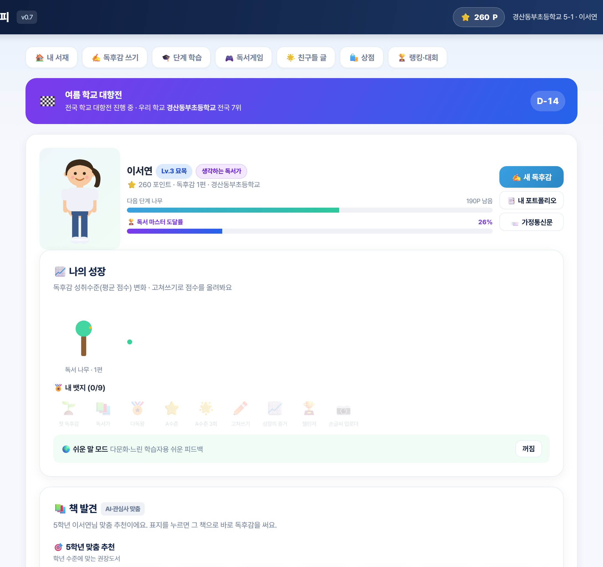
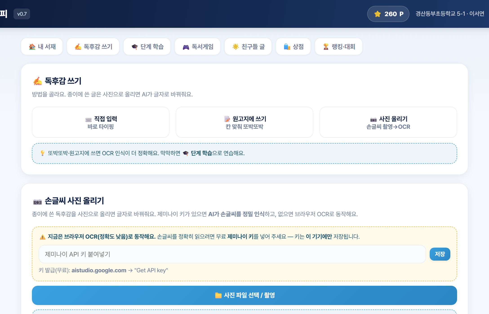
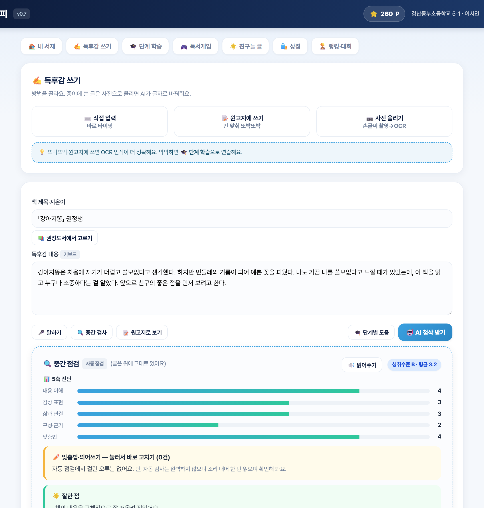
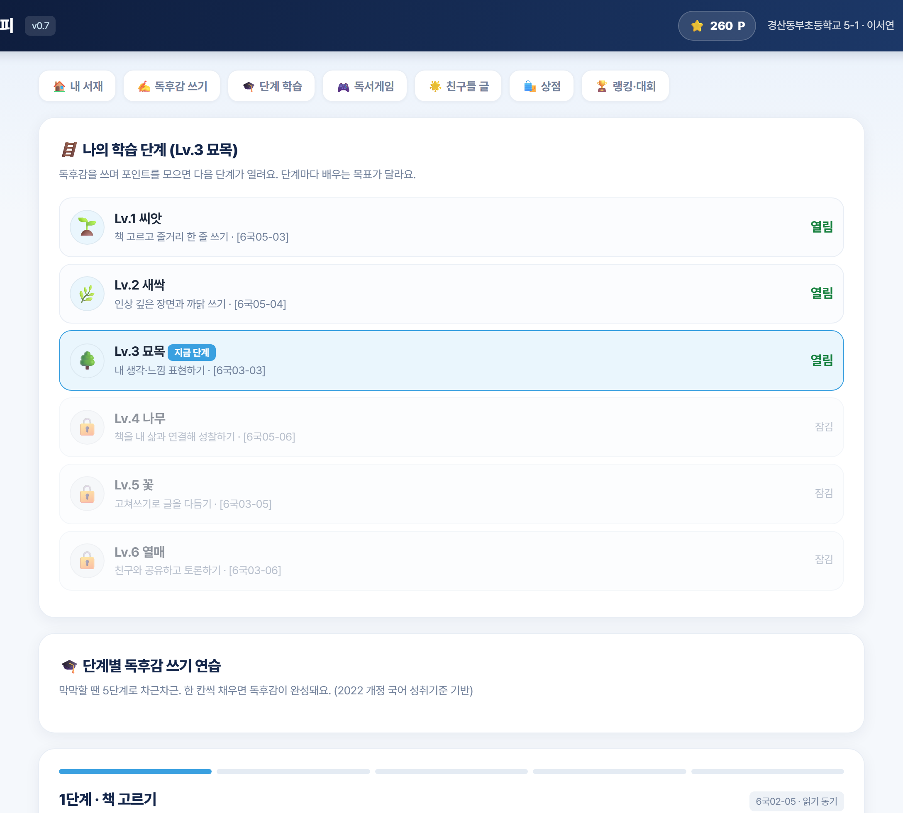
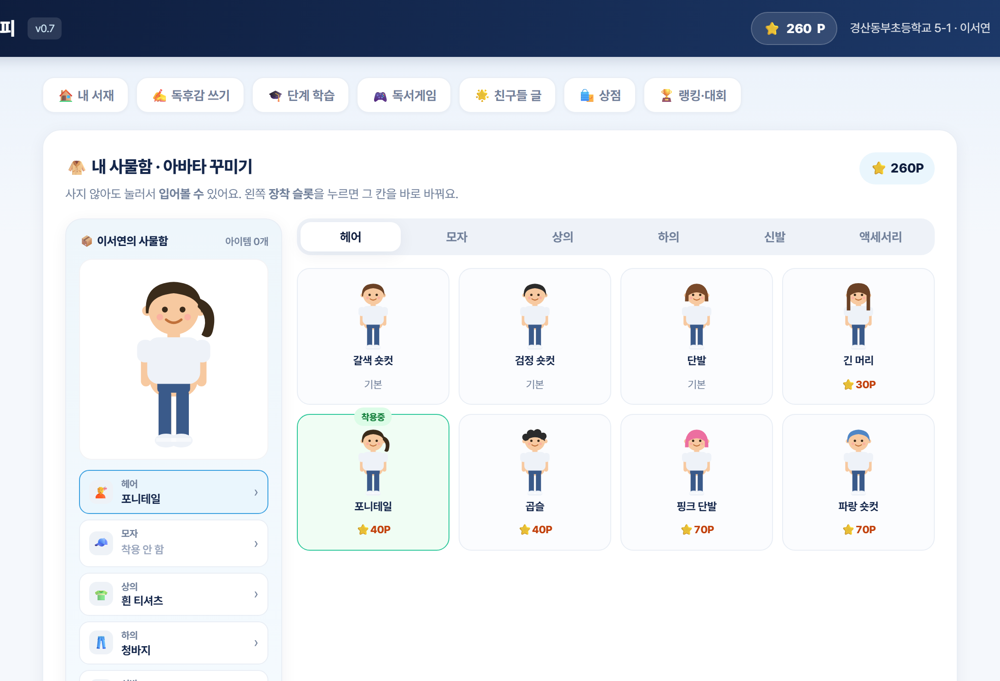
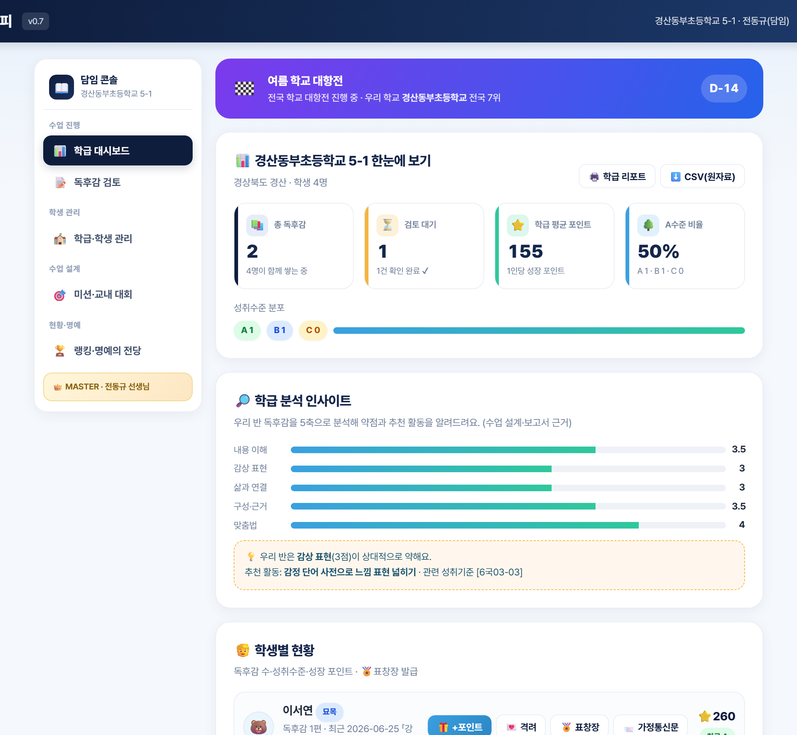
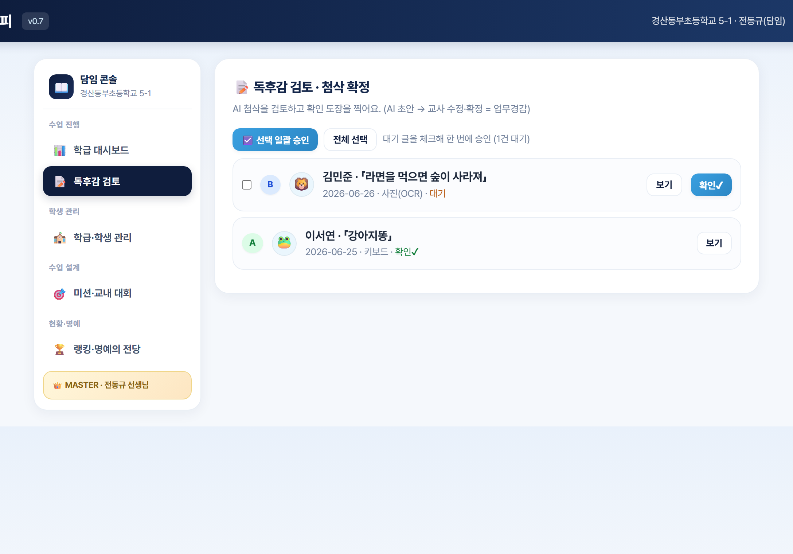
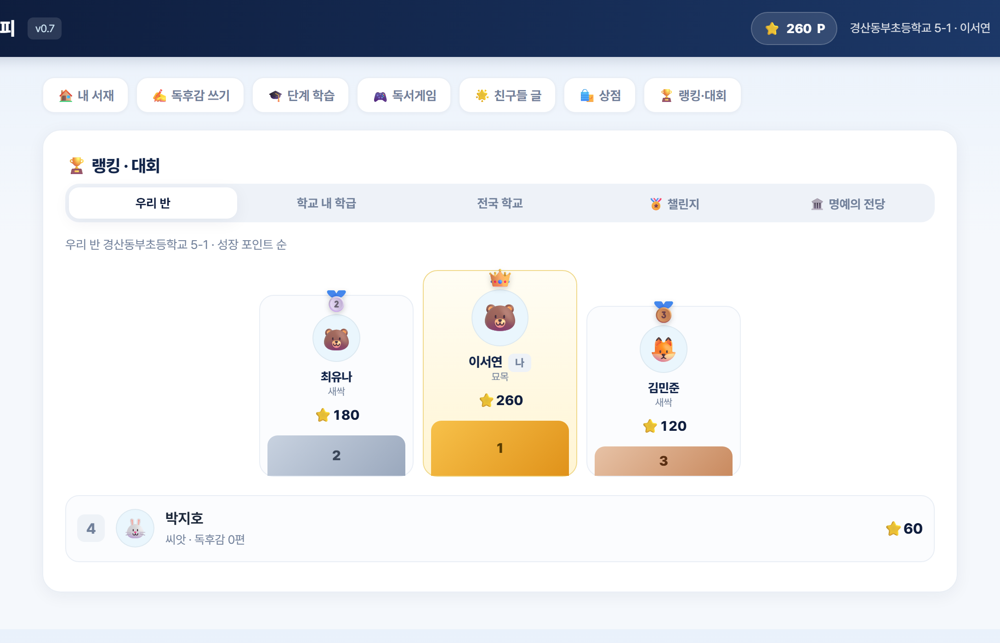
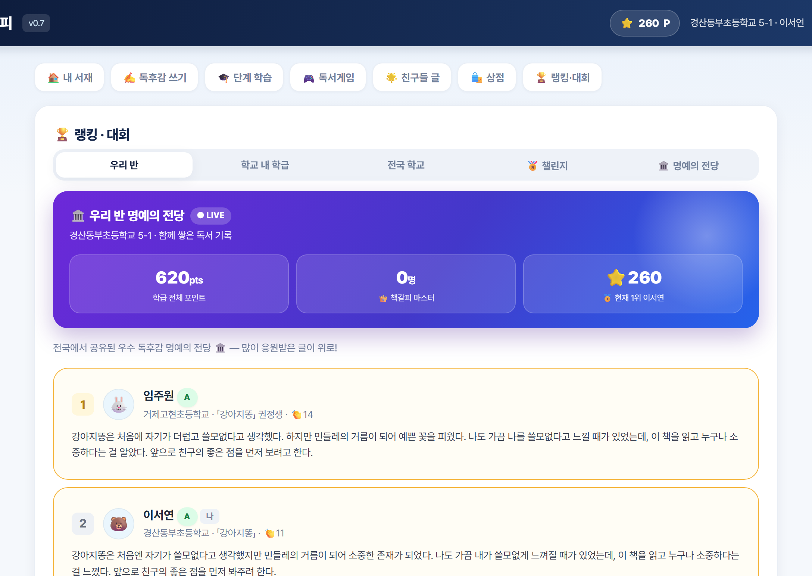
| 차시 | 활동 | 책갈피 활용 | 성취기준 |
|---|---|---|---|
| 1차시 | 책 고르기·읽기 계획 | 책 발견 캐러셀·단계 학습 위저드 | [6국02-05] |
| 2차시 | 독후감 초안(손글씨) | 원고지·OCR 입력 | [6국03-03] |
| 3차시 | AI 첨삭·고쳐쓰기 | 5축 진단·발전 제안·향상도 | [6국03-05] |
| 4차시 | 공유·토론·시상 | 나눔터·랭킹·명예의 전당 | [6국03-06]·[6국05-04] |
| 상시 | 평가·기록 | 교사 검토·확정, 학급 분석, 표창장 | 과정 중심 평가 |
| 주차 | 운영 초점 | 핵심 활용 |
|---|---|---|
| 1~2주 | 도입·진단 | 가입·학급 편성, 사전 설문, 첫 독후감(진단) |
| 3~5주 | 읽기·쓰기·고쳐쓰기 | OCR 입력·AI 5축 첨삭·고쳐쓰기 향상도 누적 |
| 6~7주 | 공유·심화 | 나눔터·독서 토론·미션·챌린지 |
| 8주 | 정리·평가 | 명예의 전당·표창장, 사후 설문, 교사 학급 분석 |
| 단계 | 교수·학습 활동 | 자료 / 유의점 |
|---|---|---|
| 도입(5′) | 지난 차시 독후감 떠올리기, 학습 목표 확인 — “AI 첨삭을 읽고 내 글을 더 좋게 고쳐 쓸 수 있다” | 학생 단말·책갈피 접속 |
| 전개①(10′) | 독후감 제출 후 AI 5축 진단 확인, 칭찬·개선·발전 피드백 읽기 | ‘발전’ 제안에 주목하도록 안내 |
| 전개②(15′) | 발전 제안을 반영해 한 문단 이상 고쳐 쓰기, 맞춤법 즉시 교정 활용 | 또래와 아이디어 한 가지 나누기 |
| 전개③(7′) | 고쳐쓰기 전·후 성취수준 향상도 확인, 우수작 공유 | 향상도 그래프 함께 보기 |
| 정리(3′) | 오늘 좋아진 점 한 줄 쓰기, 다음 읽을 책 예고 | 교사 코멘트·포인트 지급 |
※ 중심 성취기준 : [6국03-05] 통일성 있게 고쳐 쓰기, [6국05-06] 작품을 삶과 연관 지어 성찰.
학생이 AI 첨삭을 반영해 글을 고쳐 쓰면, 이전 글과 현재 글을 단어 단위로 비교하여 추가된 부분은 초록, 삭제된 부분은 빨강으로 표시한다(GitHub 스타일). 성취수준 향상도를 함께 제시하여, 본 연구가 강조한 ‘과정 중심 평가’와 ‘고쳐쓰기 성장’을 한눈에 드러낸다. 학생의 자기 점검과 교사의 평가 근거로 동시에 활용된다.
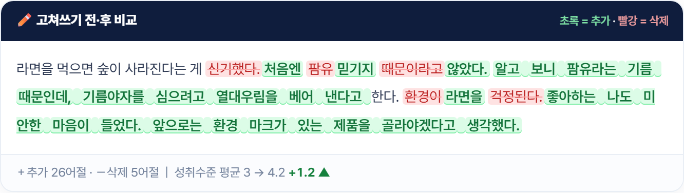
담임·학급을 넘어 학교 단위 독서 교육을 지원하는 두 권한을 둔다. 교무관리자는 전교 독서 통계와 NEIS 생기부 자동요약으로 행정을 자동화하고, 사서교사는 전교 독서현황과 도서관 대출(DLS)을 운영한다.
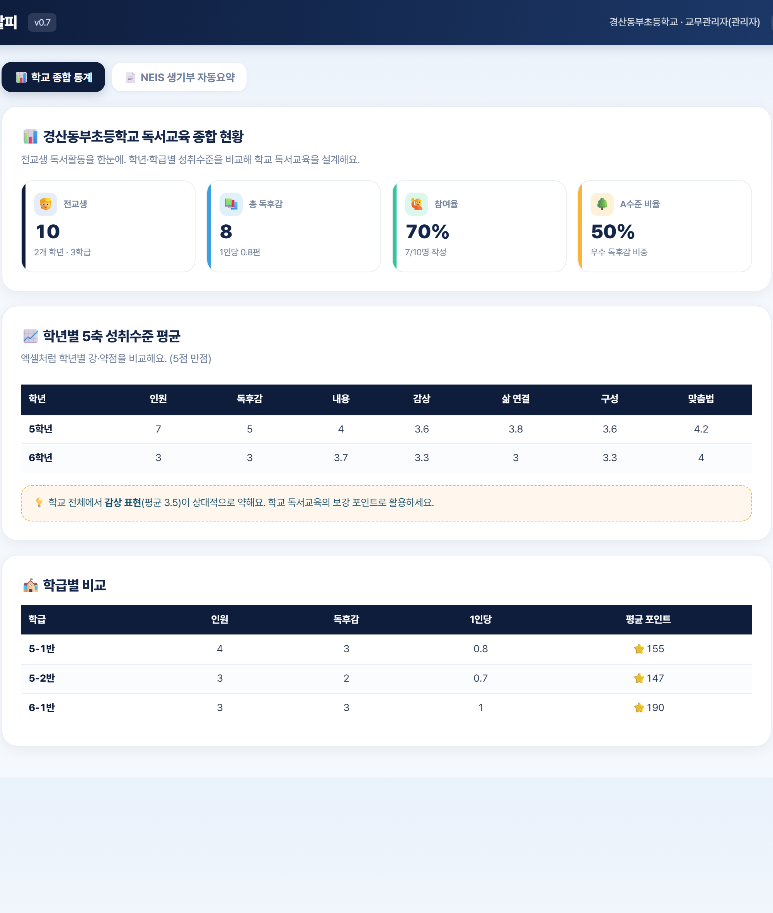
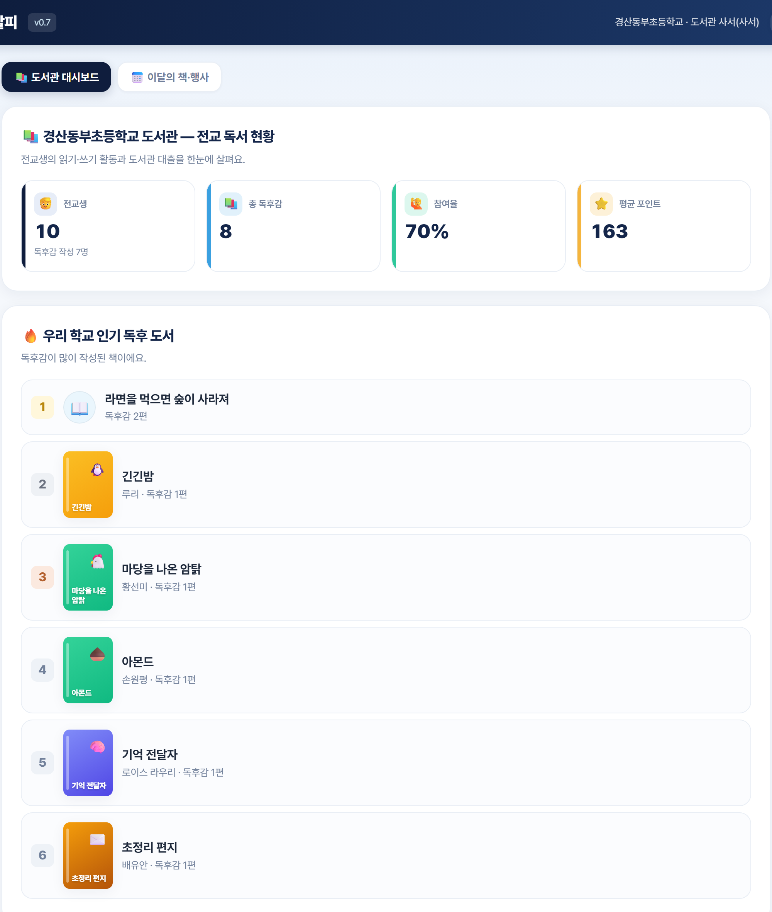
‘책 발견’에서 책을 누르면, 책의 분위기를 담은 모션 그래픽 북 트레일러와 핵심 줄거리가 모달로 재생된다. 학생이 한 문장을 입력하면 AI가 짧은 소개 영상을 만들어 주는(데모) 프레임도 제공하여, 텍스트를 넘어선 시각적 독서 동기를 부여한다.
현장 전문가 피드백을 반영하여, 쓰기의 전(全) 과정과 교사 자율성·가정 연계를 강화하는 보조 기능을 추가하였다.
| 기능 | 내용 · 교육적 의도 |
|---|---|
| 🕸️ 생각그물(0단계) | 쓰기 전 핵심 낱말·장면·느낌을 모아 첫 문장을 자동 생성 — 글쓰기 막막함 해소, 과정 중심 쓰기 완성 |
| 💬 동료평가 스티커 | 친구 글의 문장에 긍정 피드백 스티커(멋진 표현·공감·나도 그래요) — [6국05-04] 협력적 소통 |
| ⚖️ 루브릭 가중치 | 교사가 책·수업 목표에 따라 5축 가중치·이번 주 강조 축을 설정 — 평가의 교사 자율성 |
| 📤 성장 카드 | 독서 나무·고쳐쓰기 향상도를 이미지 카드로 저장해 학부모와 공유 — 가정 연계 |
| 📒 나만의 단어장 | 독후감 어휘를 자동 수집 + 활용 게임 — 어휘력·문해력 향상 |
| 🎨🎤 멀티미디어 | 책 장면 그림·낭독 녹음 첨부 — 시각·청각 표현(멀티미디어 리터러시) |
| 🔍 OCR 돋보기 | 원본 사진 확대경으로 손글씨를 대조 — OCR 교정 부담 경감 |
| 활용 대상 | 초등 5~6학년 2개 학급 내외(적용교 협의) |
| 활용 기간 | 8주(한 학기 한 권 읽기 주기 연계) |
| 검사 도구 | ① 성취수준 5축 루브릭(교육과정 기반 자체 개발) ② 읽기·쓰기 동기/태도 설문(사전·사후) ③ 교사 업무경감·효과성 설문 |
| 분석 방법 | 사전·사후 비교, 고쳐쓰기 향상도(시스템 자동 산출), 설문 기술통계 |
검증은 ① 도입기 첫 독후감으로 사전 성취수준을 진단하고, ② 8주간 OCR 입력·AI 첨삭·고쳐쓰기를 반복하며 시스템이 향상도를 누적한 뒤, ③ 종료기에 동일 조건의 독후감으로 사후 성취수준을 측정해 비교하는 절차로 설계한다. 동기·태도는 동일 문항의 사전·사후 설문으로, 교사 효과성은 활용도·업무경감 설문으로 확인한다. 모든 원자료는 학급 단위로 보관하여 검증의 재현성을 확보한다.
「책갈피」는 평가 데이터를 자동 집계하여 효과 검증의 원자료를 제공한다. 아래는 산출 형식의 예시(가안)이다.
| 구분 | 사전 평균(5점) | 사후 평균(5점) | 향상도 |
|---|---|---|---|
| 내용 이해 | 3.1 | 4.0 | +0.9 |
| 감상 표현 | 2.8 | 3.9 | +1.1 |
| 삶과 연결 | 2.6 | 3.8 | +1.2 |
| 구성·근거 | 2.9 | 3.7 | +0.8 |
| 맞춤법 | 3.3 | 4.1 | +0.8 |
| 전체 평균 | 2.94 | 3.90 | +0.96 |
※ 위 수치는 산출 형식을 보이기 위한 예시이며, 실제 적용 학급의 자동 집계값으로 대체된다.
학급의 A수준 비율, 평균 포인트, 5축 약점은 교사 대시보드에서 실시간 자동 집계되어(［화면 6] 참조) 수업 설계와 보고서 근거 자료로 활용된다.
| 문항(요약) | 사전 | 사후 | 변화 |
|---|---|---|---|
| 책 읽기가 즐겁다 | 3.2 | 4.1 | +0.9 |
| 독후감 쓰기에 자신이 있다 | 2.6 | 3.8 | +1.2 |
| 글을 쓴 뒤 다시 읽고 고친다 | 2.7 | 4.0 | +1.3 |
| AI 도움 학습이 편리하다 | 3.4 | 4.4 | +1.0 |
※ 예시(가안). 실제 적용 학급의 응답으로 대체된다. 사전·사후 동일 문항([붙임4·5])으로 비교한다.
생성형 AI를 학교 현장에 들일 때는 할루시네이션·편향·과의존이라는 위험을 반드시 다루어야 한다. 본 시스템은 다음 장치로 이를 통제한다.
| 위험 | 대응 설계 |
|---|---|
| 할루시네이션 (허위·과장) | 교사 확정 권한 필수화 — AI는 ‘초안 점수·제안’만 내고, 성취수준의 최종 결정과 정서적 격려는 교사가 한다. AI 진위 점검도 보조 지표로만 활용한다. |
| 편향·불공정 | 평가를 2022 개정 성취기준(5축 루브릭)에 고정해 설명 가능성을 확보하고, 교사가 가중치를 조정해 수업 맥락을 반영한다. |
| 과의존 | 학생이 AI 제안을 비판적으로 수용해 ‘고쳐쓰기’하도록 지도하고, 생각그물·동료평가 등 사람 중심 활동을 함께 둔다. |
| 연령·개인정보 | 학생은 모델을 직접 호출하지 않으며(연령 약관 회피), 사적 경험이 담긴 독후감은 학급 내 열람으로 제한하고 외부 공유는 동의를 전제한다. |
특히 본 시스템은 별도의 서버 구축이나 예산 없이 학급 단위로 즉시 시작할 수 있다는 점에서 확산 장벽이 낮다. 교사는 가입 후 곧바로 학급을 개설하고, 학생은 같은 학교·학년·반으로 가입하면 자동으로 편성된다. 이러한 제로 셋업(zero-setup) 특성은 디지털 인프라 격차가 있는 학교에서도 책갈피를 무리 없이 활용할 수 있게 하여, 교육 형평성 측면에서도 의미를 가진다.
향후 (1) 실제 학급 적용을 통한 효과 검증 데이터 수집, (2) 도서관 대출·실제 제출 집계와의 실데이터 연동, (3) 서버/DB 마이그레이션과 OCR·첨삭 엔진 고도화, (4) 국어과 외 교과(사회·과학 독서)로의 확장이 필요하다. 교사·학생이 함께 축적하는 독후 데이터는 시간이 갈수록 시스템의 진단 정밀도와 교육적 가치를 높일 것이다.
특히 누적된 독후감과 교사 확정 데이터는 그 자체로 학교 맞춤형 평가 자료가 된다. 학년·학급의 성취수준 변화를 장기적으로 관찰하면 독서·쓰기 교육과정 운영을 데이터에 근거해 개선할 수 있으며, 학생 개인의 성장 포트폴리오는 진급·진학 시 의미 있는 참고 자료로 활용될 잠재력을 지닌다.
본 연구는 ① 독후감의 내용·사고를 성취수준 루브릭으로 진단하는 미개척 영역을 다루었고, ② 손글씨 OCR로 오프라인 쓰기와 디지털 학습을 연결했으며, ③ AI 초안–교사 확정이라는 인간 중심 평가 모델을 제시했다는 점에서 의의가 있다. 이는 생성형 AI를 교육에 책임 있게 통합하는 하나의 실천 모델로서, 다른 교과·학교급으로 확장될 잠재력을 지닌다.
교육부. (2022). 2022 개정 초·중등학교 교육과정 — 국어과 교육과정. 교육부 고시 제2022-33호.
교육부·한국교육과정평가원. (2023). 2022 개정 교육과정에 따른 과정 중심 평가의 이해와 적용.
한국교육학술정보원. (2023). 초등 교사를 위한 KERIS와 시작하는 인공지능 교육.
국내 초·중등 생성형 AI 교육 연구 동향 분석. (2024). 한국컴퓨터정보학회 학술발표논문집.
초등학교 대상 생성형 AI 활용 교육 연구 동향 분석. (2024). 한국컴퓨터정보학회.
유인근, 박형용. (2023). 초등 국어과 글쓰기 교육을 위한 AI 문장 생성 웹 서비스 개발. 교육과정평가연구.
한국교육개발원. (2023). 학생 문해력 실태 및 지원 방안 연구.
신원경. (2021). 과정 중심 평가를 위한 초등 쓰기 루브릭 개발 연구. 작문연구.
한국교육학술정보원. (2024). 디지털 기반 교육혁신과 에듀테크 활용 가이드.
OECD. (2021). 21st-Century Readers: Developing Literacy Skills in a Digital World. OECD Publishing.
노명완, 박영목. (2008). 문식성 교육 연구. 한국문화사.
Flower, L., & Hayes, J. R. (1981). A cognitive process theory of writing. College Composition and Communication, 32(4), 365–387.
주제어(Keywords) : 독서교육, 독후감 첨삭, 인공지능(AI), 성취수준 루브릭, 과정 중심 평가, 손글씨 OCR, 디지털 문해력
※ 본 보고서의 모든 문장은 연구자가 직접 작성하였으며, 인용은 APA 양식을 따른다. 실제 출품 시 인용 서지는 최종 확인·보완한다.
| 담당 | 구체적 역할 |
|---|---|
| 주개발 / 설계 | 시스템 아키텍처 설계 및 구현, AI 첨삭·OCR 파이프라인 개발, 데이터 모델 설계, 핵심 알고리즘(5축 산정·향상도) 구현 |
| 교육콘텐츠 / UI | 교육과정 분석 및 성취기준 매핑, 권장도서·루브릭 콘텐츠 기획, UI/UX 디자인, 사용성 테스트 및 개선 |
| 번호 | 형태 | 파일/요소 | 설명(키워드) | 비고 |
|---|---|---|---|---|
| 1 | 벡터 | SVG 캐릭터(부위 합성) | 아바타 6슬롯 장착 시스템 | 직접 제작 |
| 2 | 벡터 | 성장 단계 아이콘 | 씨앗→열매 6단계 | 직접 제작 |
| 3 | 데이터 | 권장도서 DB | 학년별 추천·인기·대출 Top | 직접 구축 |
| 4 | 폰트 | Pretendard | 본문·UI 서체 | 오픈 라이선스(OFL) |
| 5 | 데이터 | 전국 학교 DB | NEIS 학교 검색 로그인 | 공공데이터 |
| 6 | 스크립트 | 5축 첨삭 엔진 | 루브릭 산정·피드백 생성 | 직접 개발 |
| 7 | 스크립트 | OCR 연동 모듈 | 비전/브라우저 OCR·이미지 압축 | 직접 개발 |
| 8 | 음향 | TTS(읽어주기) | 웹 음성 합성 API 활용 | 브라우저 기본 |
| 성취기준 | 내용 | 연계 기능 |
|---|---|---|
| [6국02-05] | 긍정적 읽기 동기·태도 | 책 발견·포인트·랭킹 |
| [6국05-03] | 인물·사건·배경 파악 | 5축(내용 이해)·작성 위저드 |
| [6국03-03] | 체험에 대한 감상 표현 | 5축(감상 표현) |
| [6국05-06] | 작품을 삶과 연관·성찰 | 5축(삶과 연결)·발전 제안 |
| [6국03-05] | 통일성 있게 고쳐 쓰기 | 5축(구성)·고쳐쓰기 향상도 |
| [6국04-06] | 표기의 정확성 | 5축(맞춤법)·즉시 교정 |
| [6국05-04] | 인상적 부분 의견 나누기 | 나눔터·독서 토론방 |
| [6국03-06] | 글을 독자와 공유 | 우수작 공유·응원·명예의 전당 |
「책갈피」는 독서활동 기록을 위해 아래 정보를 수집·이용합니다. (학급 단위 운영, 외부 제공 없음)
20 . . . 학생 ( 서명 ) 보호자 ( 서명 )
데이터는 학급(학교·학년·반) 단위로 관리되며, AI 호출은 학생에게 노출되지 않는다. 각 단계는 교체형 모듈로 분리되어 점진적 고도화가 가능하다.
독후감을 5개 축으로 진단하는 채점 기준이다. AI가 각 축을 A·B·C로 진단하고, 교사가 조정·확정한다.
| 축 | A (도달) | B (부분 도달) | C (미흡) |
|---|---|---|---|
| 내용 이해 | 인물·사건·배경을 정확히 파악해 줄거리를 짜임새 있게 정리 | 주요 내용을 대체로 파악하나 일부 누락·혼동 | 줄거리 파악이 단편적이거나 부정확 |
| 감상 표현 | 인상 깊은 점과 그 까닭을 구체적·풍부하게 표현 | 감상을 표현하나 까닭이 단순함 | 감상이 막연하거나 ‘재미있었다’ 수준에 머묾 |
| 삶과 연결 | 작품을 자신의 경험·삶과 적극 연관 지어 성찰 | 연결을 시도하나 피상적임 | 삶과의 연결이 거의 드러나지 않음 |
| 구성·근거 | 문단이 통일성 있고 근거·연결어가 자연스러움 | 구성은 갖췄으나 흐름·근거가 약함 | 문장이 나열식이거나 흐름이 끊김 |
| 맞춤법 | 표기·띄어쓰기 오류가 거의 없음 | 오류가 있으나 의미 전달에는 지장이 없음 | 오류가 잦아 의미 전달을 방해함 |
※ 5축 평균으로 성취수준(A≥4.0 · B≥2.8 · C)을 산출하며, ‘발전’ 피드백은 B→A 도달을 위한 사고 확장 질문·제안으로 제시된다.
| 영역 | 하위 기능 |
|---|---|
| 내 서재(홈) | 캐릭터·레벨/칭호·마스터 도달률, 성장 그래프, 독서 나무, 뱃지, 책 발견 캐러셀(학년·이달·인기·대출 Top), 미션/챌린지 카드, 내 독후감 목록 |
| 독후감 쓰기 | 키보드 입력, 원고지(200칸), 사진 OCR, 권장도서 선택, 중간 검사, AI 5축 첨삭, 맞춤법 즉시 교정, 음성 입력(STT), 읽어주기(TTS), 쉬운 말 모드, 고쳐쓰기 |
| 단계 학습 | 6단계 레벨 패스(씨앗→열매), 5단계 작성 위저드(성취기준 연계) |
| 독서게임 | 골든벨, 밸런스 게임, 빙고, 책 퀴즈, 퀴즈 대결, 어휘게임, 인물맞히기, 마라톤 (8종) |
| 나눔터 | 우수작 게시판·또래 응원, 독서 토론방 |
| 상점 | 아바타 사물함(6슬롯 장착), 미리보기·구매·착용 |
| 랭킹·대회 | 우리 반·학교·전국 포디움, 챌린지, 명예의 전당 |
| 교사 콘솔 | 학급 대시보드, 5축 분석 인사이트, 독후감 검토·확정, 원본 열람, 진위 점검, 일괄 승인, 학생 관리·비번 초기화, 포인트 지급, 미션 개설, 표창장·가정통신문·CSV |
AI 첨삭 모듈은 아래와 같은 구조화된 결과를 반환하여, 화면 표시·점수 산정·교사 확정에 일관되게 활용된다.
※ AI 키가 없을 경우 동일한 출력 구조를 규칙 기반 휴리스틱으로 산출하여 무중단으로 동작한다.
| 단계 | 교사 활동 | 소요 |
|---|---|---|
| 1 | 담임으로 가입(학교·학년·반 선택) — AI는 기본 제공, 키 설정 불필요 | 약 2분 |
| 2 | 학생 가입 안내(같은 학급 자동 편성) 또는 직접 추가 | 약 5분 |
| 3 | 이달의 책·미션 개설(도서·기간 지정) | 약 2분 |
| 4 | 학생 독후감 제출 → 검토·확정(5축 조정·코멘트) | 편당 1~2분 |
| 5 | 학급 분석으로 약점 진단 → 수업 설계, 표창장 발급 | 상시 |
※ 별도 설치나 키 발급 없이 웹 접속만으로 즉시 운영할 수 있다(AI는 서비스에 기본 내장).
| 수준 | 독후감 예시 — 「마당을 나온 암탉」 | 진단 요약 |
|---|---|---|
| A | “잎싹은 알을 품는 꿈을 위해 마당을 나왔다. 두렵지만 자유를 선택한 잎싹이 멋졌다. 나도 피아노를 그만두고 싶을 때가 있었는데, 잎싹처럼 내가 정말 원하는 걸 용기 내어 지켜야겠다고 생각했다.” | 내용·삶 연결·구성 모두 우수, 경험을 구체적으로 연결 |
| B | “잎싹이 마당을 나와서 알을 품었다. 자유를 찾아서 멋있었다. 나도 용기를 내야겠다고 생각했다.” | 줄거리·감상은 있으나 까닭·경험이 단순 |
| C | “마당을 나온 암탉을 읽었다. 재미있었다. 잎싹이 나온다.” | 줄거리·감상이 단편적, 발전 제안 우선 필요 |
※ 같은 도서라도 수준에 따라 첨삭의 ‘발전 제안’ 초점이 달라진다(C→줄거리·감상 구체화, B→경험 연결, A→사고 심화).